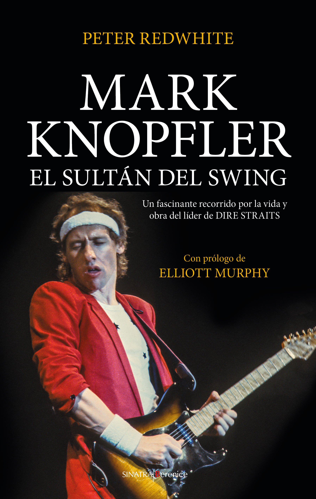

Música pop
Próximo a aparecer el libro de este título, su autor escribe para ECM Digital la aventura literaria que supuso adentrarse en la vida del guitarrista estrella de Dire Straits.
Por Peter Redwhite
Foto: Álvaro Luna de Andrésii
Cuando el Támesis y el Tyne desembocan en la región del Delta del Misisipi.
A cualquiera al que le guste la buena música y no haya profundizado en exceso en la vida y obra de Mark Knopfler, le debería llamar la atención el empeño del músico nacido en Glasgow por definirse como autor de álbumes y canciones alejándose todo lo posible de la etiqueta que le suele acompañar de virtuoso de la guitarra, por más que todos recordemos sus solos en temas imperecederos como Sultans Of Swing. Knopfler reconoce tener buen oído y ciertas cualidades, pero asegura que su conocimiento lo componen retazos de aquí y de allá y que nada tiene que ver con leyendas como Django Reinhardt o su amigo, fallecido en 2001, Chet Atkins, quien le vino a decir que era la clase de músico que no sabía exactamente lo que estaba haciendo, pero al que, al final, todo le salía bien. Quizá, si nos adentrásemos algo más en lo que se conoce de la vida y la obra de Mark Knopfler, podríamos entender algo mejor por qué el vigesimoséptimo mejor guitarrista de la historia según la revista Rolling Stone nos recuerda a menudo que no recomienda a nadie ser autodidacta y que sería la pesadilla de cualquier profesor de guitarra; parece mucho más interesado en asociar cualquier talento que pudiera tener a la composición y escritura de buenas canciones.
Cuando el director de la editorial Berenice, Javier Ortega, me confió la tarea de escribir un libro que ayudase a llenar el vacío existente en cuanto a literatura acerca de Mark Knopfler, desconocía mucho sobre él. Además de sorprenderme la insistencia de Knopfler a minusvalorar sus habilidades como guitarrista, me encontré con el problema de acercarme a él utilizando una voz respetuosa y autorizada: jamás me había enfrentado a la tarea de escribir una vida y el hecho de que el protagonista estuviera vivo y fuese alguien más bien dado a evitar los focos no me ayudaba. Tras varias tentativas, creí dar con una solución: mi narrador-protagonista sería un fan de Mark Knopfler. De esta manera, eludiría los problemas del uso de un narrador omnisciente hablando de un universo que por definición sólo conocía parcialmente y, a la vez, honraría a todas las personas cuya vida se han visto tan marcadas como la de mi personaje por la obra de Knopfler. Enseguida ideé una estructura en triadas que se repetiría secuencialmente a lo largo del todo el texto: un capítulo en el que el protagonista hablaría de su propia experiencia como fan, otro algo más académico para contar la vida y obra de Mark Knopfler y, finalmente, un último tipo en el que la narración se detendría y se ficcionarían, basándose en hechos conocidos, episodios relevantes, valga de ejemplo la compra de la primera guitarra, al estilo de Marcel Schwob y sus vidas imaginarias.
Una vez definidos el narrador y la estructura, me pude olvidar de estos asuntos más propios de la teoría literaria y centrarme en la creación de las vidas de mis personajes. Ya avisaba Teilhard De Chardin de que todo hecho vital es un continuum, como el chorro que sale de la fuente, y es el pensamiento el que estructura y da sentido lógico. Pronto descubrí que no había tanta diferencia entre Mark Knopfler y el bajista John Illsley y la pareja de fans que había ideado para articular la historia: en ambos escenarios, se trataba de escoger y descartar hechos (contrastados en el caso de los músicos de Dire Straits e inventados en el caso de los seguidores ficticios) y contarlos de cierta manera, lo que, inevitablemente, ya implicaba la formación de un punto de vista, concepto también clave en Teoría de la Literatura.

Volviendo al principio del artículo y dejando de lado asuntos de índole más bien filosófica, al sumergirme en la vida de Knopfler y analizar su música, he creído entenderle cuando asegura que lo suyo es hacer buenos discos, incluso me parece que coincido con él cuando dice que nunca ha hecho mejores canciones que ahora, aunque antes de ponerme a escribir me fascinasen muchas composiciones de Dire Straits y pensase que sus últimos álbumes pueden resultar algo monótonos e intercambiables entre sí: para mí, éstos eran más bien el acompañamiento ideal mientras escribía en un café o trabajaba en la oficina. Supongo que, si durante el último año no me llego a poner en la piel de Mark Knopfler en la medida de lo posible, si no llego a viajar de Glasgow a Newcastle, de Newcastle a Harlow, de Harlow a Leeds, de Leeds a Londres, de Londres a Essex, de Essex a Londres de nuevo y a recorrer el mundo intentando asimilar lo que supone liderar la banda más influyente de los noventa, el Tyne (el río que atraviesa Newcastle) y el Támesis jamás
desembocarían en la región del Delta del Misisipi (de donde proceden algunos de los sonidos predilectos de Knopfler) como lo hacen en la peculiar geografía propia que el roquero, como todo autor relevante que se precie, ha logrado crear con su obra.
Mark Knopfler aprendió a condensar realidades mucho más extensas en canciones de pocos minutos gracias a su primer trabajo serio como reportero junior en el Yorkshire Evening Post, éste también le ayudó a entender muy pronto cómo funciona el mundo. Más tarde, se graduaría en la Facultad de Literatura de la Universidad de Leeds exponiéndose a la obra de los grandes novelistas y poetas en lengua inglesa. Aunque hoy diga leer no más que una persona media, Mark Knopfler leía muchísimo durante las mastodónticas giras de Dire Straits, y esto se reflejó, de manera más o menos directa, en muchas de sus composiciones. Por ejemplo, el origen de la monumental canción de más de catorce minutos Telegraph Road hay que buscarlo cuando el autocar de la banda estaba atrapado en un interminable atasco en carretera del Telégrafo, en Detroit, y Mark Knopfler estaba leyendo la novela La bendición de la tierra, del Nobel noruego Knut Hamsun. El lugar en el que se encontraban en otra época (cuando las líneas de telégrafo recorrían los arcenes de la carretera por la que trataban de transitar) y los protagonistas del libro que estaba leyendo (un canto a la vida rural que presenta a los que cultivan la tierra como el motor de un país), unidos al pensamiento de que nunca saldría de aquel embotellamiento como jamás lo haría de las garras de las discográficas, fueron la semilla de un texto en el que la épica narrativa de Knopfler es capaz de hablarnos de los cambios sociales y económicos de un territorio que simboliza el auge y declive del modelo americano de crecimiento. Es fácil encontrar más ejemplos de canciones inspiradas en libros en la obra de Knopfler, a veces la relación es tan clara como entre Sailing To Philadelphia y Mason y Dixon, de Thomas Pynchon, otras, como en Why Aye Man, ésta es algo más rebuscada. Este último tema surgió cuando Mark Knopfler buscaba componer una canción para la serie Auf Wiedersehen, Pet, que trata de unos albañiles de Newcastle que emigran a Alemania a la busca de empleo en los ochenta. Fue entonces cuando recibió un ejemplar dedicado de la colección de
poemas del Nobel irlandés fallecido en 2013 Seamus Heaney The Spirit Level en el que éste le animaba a mantener alto el nivel. El título del libro le hizo acordarse con cariño del nivel con burbuja que usaba su padre y escribir sobre la época de la Thatcher dejó de ser un problema. Otra amistad relevante es la que mantiene con el novelista norteamericano Richard Ford, uno de mis autores preferidos. De hecho, Ford escribió las liner notes, las anotaciones de la funda del álbum, de Tracker (2015). En ellas, el escritor reivindica la facilidad de Knopfler para imaginar un mundo entero con tan pocas palabras, para juntar en una historia bulliciosos fragmentos a priori inconexos. Además de tratar de arrojar luz sobre las formalidades internas, a Ford le fascina que música y letra encajen tan armoniosamente, como si hubiesen sido fundidas de un único golpe y nunca hubiesen estado en conflicto, logrando renovar nuestra percepción sensorial y emocional de la existencia creando una conciencia más amplia de la vida: “no hay mayor gracia en la tierra que ésta”. Otras canciones relacionadas con la literatura son Lady Writer (inspirada por la figura de la incisiva literata Marina Warner), Beryl (su reivindicación de la denostada autora Beryl Bainbridge) y Basil (un moderno vals en el que narra cuando coincidió de adolescente con el poeta objetivista Basil Bunting, amigo de Ezra Pound, en la redacción de un periódico de Newcastle), pero no cabe duda de que la formación periodística de Mark Knopfler, su gusto por la buena literatura y su innegable capacidad para vislumbrar el germen de un texto pertinente en situaciones cotidianas son elementos fundamentales a la hora de explicar por qué la mayor parte de sus canciones (independientemente de su origen y del asunto que traten y siempre ayudadas por su facilidad para crear melodías adecuadas a la letra) son, como asegura Richard Ford, tan formalmente complejas y literariamente relevantes como los mejores relatos cortos.
A pesar de que todo lo anterior pueda ayudarnos a entender por qué Knopfler prefiere reivindicarse como autor de canciones más que como guitarrista, me parece tremendamente injusto obviar la combinación entre talento y esfuerzo que explica, más allá de su formación autodidacta y de su peculiar estilo, por qué ha sido capaz de idear e interpretar algunos de los riffs de guitarra que siempre permanecerán con nosotros. El primer momento de auténtica revelación, de joyceanaepifanía, hay que buscarlo en la infancia de Knopfler, cuando tenía unos siete años y vio a su tío Kingsley interpretar el boogie-woogie al piano y armónica: “me pareció muy hermoso. Los tres acordes, su lógica. Se produjo una conexión, me di cuenta de que aquello era para mí. A partir de entonces me dediqué a aporrear el boogie-woogie al piano: los volví locos a todos”.
Tras algún contacto más con el piano y el violín, Knopfler empezó a tocar las guitarras acústicas de sus amigos formando parte de algunos grupos juveniles y tratando de imitar el estilo de sus músicos preferidos: Chuck Berry, Elvis, Scotty Moore, James Burton, Bob Dylan y, sobre todo, The Shadows; su primera guitarra tendría que ser roja como la Fender Stratocaster Fiesta Red de Hank Marvin. Sus influencias se fueron
diversificando y pronto aparecería como un purista a ojos de sus amigos y, posteriormente, compañeros de estudios en Harlow: alguien capaz de disfrutar de la música de artistas que apenas sonaban a los demás y de afirmar que Elmore James era mejor que Fleetwood Mac. Knopfler practicó hasta las tantas de la madrugada durante años y tocó en pubs de Leeds casi desde su llegada a esta ciudad, pero su trayectoria no se podría entender sin Steve Phillips: un bluesmancon el que formó un dúo en los setenta y con el que volvió a reunirse a principios de los noventa, tras el éxito difícil de manejar de Brothers In Arms, para formar una banda (The Notting Hillbillies) paralela a Dire Straits compuesta por amigos más interesados por revivir temas country en pequeños recintos que por encabezar las listas de ventas.
Una vez se graduó en Leeds en 1973, Mark Knopfler se mudó a Londres para probar suerte como músico con una banda, Brewer’s Droop, que, aunque se había hecho un nombre en el circuito universitario y visitado países como Austria y Dinamarca, no tardó en disolverse. Knopfler, quien todavía hoy reconoce tener esa determinación por cumplir un sueño adolescente superior a la normal (“tienes que desearlo casi de manera malsana”, asegura), tuvo que pasar por bastantes penalidades y ejercer empleos de poca monta antes de mudarse a Essex, donde sería profesor durante unos tres años. Allí formó una banda, Café Racers, en la que ejerció de guitarrista y pudo empezar a desarrollarse como vocalista y que llegó a tener cierto nombre en el circuito de pubs londinense.
Una mañana de verano de 1976, Knopfler se despertó con la guitarra eléctrica al cuello y rodeado de latas de cerveza. Se había quedado dormido tocando en el suelo del salón del piso de su hermano David en Deptford, al sur de Londres. No tardó en entenderse bien con John Illsley, un bajista y estudiante de Sociología que compartía piso con David. El apartamemto tenía cuatro dormitorios y Mark enseguida se fue a
vivir allí con la idea de utilizar la habitación sobrante como lugar para trabajar en las canciones que había ido componiendo durante todos aquellos años. Les faltaba un baterista para completar la formación y Mark Knopfler se acordó de Pick Withers, un consumado músico con el que había coincidido en Brewer’s Droop. Un amigo de Pick sugirió el nombre de la banda, Dire Straits (que viene a significar algo así como terribles estrecheces, lo que se suele asociar a las dificultades económicas que estaban pasando en aquel momento, aunque hay quien defiende que éste tendría más que ver con la falta de espacio en el dormitorio en el que ensayaban), el dinero para grabar una maqueta con sus canciones surgió como caído del cielo y, una vez apareció el conocido DJ radiofónico Charlie Gillett, el mayor problema de estos chicos dejó de ser cómo pagar las facturas a cómo conquistar el mundo.
Ahora, cuando mi libro Mark Knopfler. El sultán del swing está a punto de publicarse, me sigo cuestionando si es posible conocer a alguien, ya sea a través de su biografía o de su obra (decía Elliott Murphy que sus canciones saben más sobre él que lo que él sabe de ellas), cuando apenas nos es factible conocernos a nosotros mismos como nos gustaría y aún me planteo si he acertado con mi narrador, mi estructura y mi punto de vista. Mientras aguardo el encuentro con los lectores y los fans, abro Spotify y pongo la lista de reproducción MK, que contiene mis canciones preferidas de Dire Straits y Knopfler en solitario desde 1977 hasta 2024: ahora, éstas cobran sentido y suenan para mí como jamás lo habían hecho.
i Mark Knopfler. El sultán del swing, de Peter Redwhite
www.peteredwhite.com), editado por Berenice, se publicará en noviembre
de 2024
ii @Alvaro_Luna_ en X
https://www.facebook.com/alvaro.luna.180